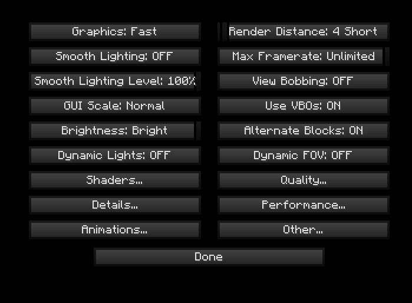
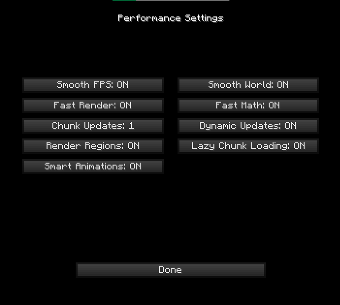
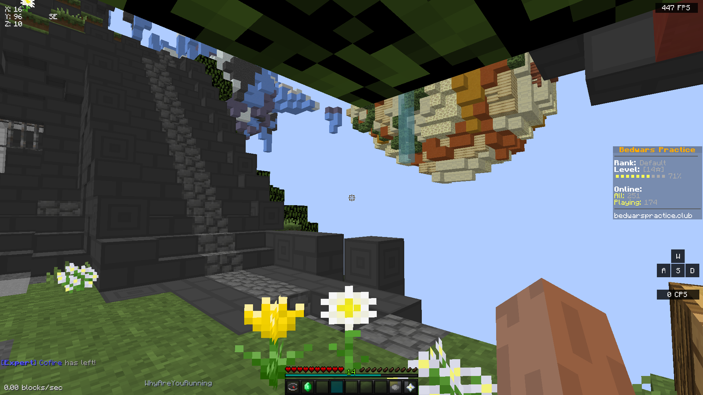
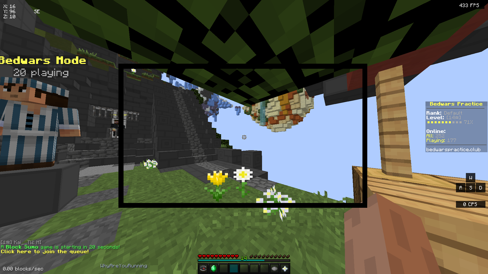

In Game Settings
Hud Settings
Lunar client is required for some of these settings. (If you use Forge and have all the mods installed, that's fine too.)
- Hit "Esc" and open Settings
- Click Video Settings
- Change "Max Framerate" to Unlimited
- (If you have a monitor with a high refresh rate [144hz+] it doesn't matter as much.)
- Turn View Bobbing off
- Turn Use VBOs on
- Turn Dynamic Fov off


- Click "Performance..."
- Match These Settings
- (Not Entirely Necessary)
- Fast Math and Fast Render are probably the most important.
- Setting Fov to higher values are generally better. We would recommend 110 fov.
70 Fov

110 Fov

Lunar Client Settings
he reached out with his hand and he got teardrops in his eyes